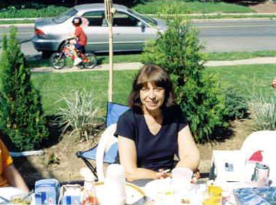

Jester-Knight
Literature
Film
Music
Visual Art
Tributes
Submissions
Links
Contact
Annette Becker (1941 - 2006)

On the Passing of a Bodhisattva
(a memorial to Annette Madia Becker, October 19, 1941-January 15, 2006) by Joey Madia
There are some stories that writers do not want to have to tell; but I have found that these are the most important stories of all…
Annette Becker (my wonderful Aunt Annette) died in an instant, the way we come into the world. For months, we are all Expectation (my sister is expecting her first child in a few months, so the air is filled with it) and then in one instant, our Great Gift comes into the world. We try our best to enjoy every moment we have with this precious life that the Universe has seen fit to cross with ours—we nurture the relationship in countless ways; we call and visit when we can, fill our homes with pictures of vacations and special occasions, save letters and Holiday cards, share spontaneous gifts because it felt right to do so—and we try not to think about the moment when that time of our Sharing has come to an end and our Great Gift is taken away.
To me, that is the measure of our success in our lives—if we are able to grieve without feeling regret when that Great Gift is suddenly taken from us. Did we treasure the people who meant the most? Did we respect their advice and forgive their bad days? Did we make time for them and help them when we could, whether they asked or not?
It was clear as I sat in the very back of the room where her Memorial Service was held (extra chairs were put out to accommodate the overflow of attendees), listening to her husband Robert and her brothers and sisters sharing their memories and stories and watching the solemn faces of those in the audience, that Aunt Annette was greatly Loved. That she was respected and honored while she lived and that most of us in that room knew that we had made the most of our time with her. I had never heard so many people say so many positively nice things about another human being and actually mean it, and there was no doubt as to the Sincerity and Depth of Feeling in that room on that day.
Annette Becker had that kind of an effect on people.
She was a fighter—and not just in theory. In her many years on this Earth, she endured a great deal, in numerous ways on numerous days. She never stayed down long, though—not in the darkest days, not during the biggest fights. This isn’t to say that she was somehow cold and sterilely obstinate—far from it. She had a great Passion, a controlled Fire, a pointed Fury when it was needed (and let’s face it—we all need that now and again), and a great Love of Loving. It made her a formidable and inspiring person to be around. She fought hard when it was necessary to protect someone, whether they were sick or had been wronged. Robert Redford said that if you don’t have enemies, you don’t have character, so I am sure she had her enemies—but they were never people close to her, never people who needed her to be there when they called. Most especially Family.
You see, she believed fiercely in the idea of Family—and most especially, as it should be, her own. If you had a problem that you couldn’t fix, you called Aunt Annette, whether it be for advice, or a shoulder, or something material, or just a good old kick in the ass to set you straight and get you out of your wallowing, and she was there. Not because she thought she HAD to be, but because she WANTED to be. I saw her nurture the talents and interests of her nieces and nephews, of her grandchildren, and of all those who came to her door—and there were many.
She applied her belief of Family and Love and Support in her work. She was a Counselor and Healer, a Teacher and Eager Lifelong Student—she believed in a person’s connectedness to the Universe and in that person’s ability to heal him or herself, and she proved it first hand—like any good Teacher or Counselor, she Practiced What She Taught (not preached—she was careful not to preach).
Her studies took her all over the United States and beyond. She met healers and spiritual teachers from many systems and countries and absorbed what felt right from each. She had a profound simplicity to her approach to spirituality and living and that simplicity made her a wonderful person to be around, and an invaluable teacher on many levels.
I remember the first time she told me a story—it was Jonathan Livingston Seagull, in her own words, related to me on a second-story redwood deck when I was 11 years old, the same age as my son Jeremy is now. I remember the sun shining down and the yard and pool filled with my aunts, uncles, cousins, and grandparents, but everything faded away as I let her voice entrance me. She had a compellingly soothing voice, Aunt Annette—so when she got into “time to kick your ass and wake you up” mode, you knew it.
I have been thinking about Jonathan and his daring to dream and to act on that dream, ever since.
As I grew older and went through high school and college, Aunt Annette was away quite a bit, on her travels. I didn’t see her or speak to her much in those years, but she remained consistently in my mind and heart. After college, as I got my first dose of The World, she and my father (her younger brother and favored sparring partner when it came to philosophical discussions because they rarely agreed and never backed down—I am going to miss that as well) combined to set me straight on a lot of things. I owe them both a great deal for that.
My life has changed in numerous ways, on numerous days since that time and Aunt Annette, along with Uncle Robert, were there to help me through a lot of “bad.” The kind of bad that anyone trying to live their life to the fullest is bound to experience. The kind of bad that they taught me to see as the necessary Experiences we need to make ourselves better. Because I approached them with humility and desire about their work and the experiences they had, I was able to spend 13 years learning from them—I learned about the ways of the shaman and the spiritual healer; how to make the most of my dreams and the messages of my subconscious; I learned the ways of Ceremony and the glory of Nature. I was introduced to new ideas and tremendous authors and countless ways to Wisdom. I learned to meditate and keep myself healthy (something that I was once very poor at doing) and to turn every Challenge, every Supposed Disaster, into something powerful and good and useful. In short, my Aunt Annette taught me that Energy was neutral and that how you handled what came your way, through Intention and Awareness, made all the difference.
I wish I could say I was as Fearless and Brave and Confident in myself as she was, as she would like me to be, especially now, when I still feel so much grief at my Great Gift having been taken away in a Moment’s time. But I can say that I am getting there, breath by breath, day by day, in numerous ways. I have so many material memories of her, and so many more experiential and abstract ones, that I feel Blessed, even in my loss.
The mission of New Mystics—the work we are doing and the work we continue to do—owes a great deal to Annette Madia Becker. I feel blessed to say that she was one of my biggest fans—and strongest critics (thank God, I still have my Mom to be both of those) and she just plain made me and my work Better.
To Aunt Annette, a bodhisattva and baba-ji if ever I knew one, I continue to dedicate my writing and my work in this world. She taught us all so much and worked so hard to help so very many people.
It is right and good that she can now take a rest and experience firsthand the things that she knew intuitively all along—that life does not end when we go from here—
and we were all glad to know her for as long as we did.
February 23, 2006
Annette
Aunt, mother, teacher—serene
My beautiful dancing peacock queen
Please—This cannot be
It was you who taught me how to breathe
Brought me to the looking glass and
Insisted I was beautiful
Even when I refused to see
You never failed to believe in me
You loved unconditionally
Magical Faerie Teller
Mystic; walker between the worlds
Why have they taken you?
Swept away with the blood moon
Why do they want you back so soon?
Despairing, I can not breathe
Now I see you as I dream
You take me to your sacred garden
And we dance among the daisies
Laughing, twirling until
We nearly can’t stand
You place the looking glass in my hand
Turn to leave as you blow a kiss
You say, “I know that you can”
“…know that you can do this.”
Tonya Madia 2/06
Aunt, mother, teacher—serene
My beautiful dancing peacock queen
Please—This cannot be
It was you who taught me how to breathe
Brought me to the looking glass and
Insisted I was beautiful
Even when I refused to see
You never failed to believe in me
You loved unconditionally
Magical Faerie Teller
Mystic; walker between the worlds
Why have they taken you?
Swept away with the blood moon
Why do they want you back so soon?
Despairing, I can not breathe
Now I see you as I dream
You take me to your sacred garden
And we dance among the daisies
Laughing, twirling until
We nearly can’t stand
You place the looking glass in my hand
Turn to leave as you blow a kiss
You say, “I know that you can”
“…know that you can do this.”
Tonya Madia 2/06